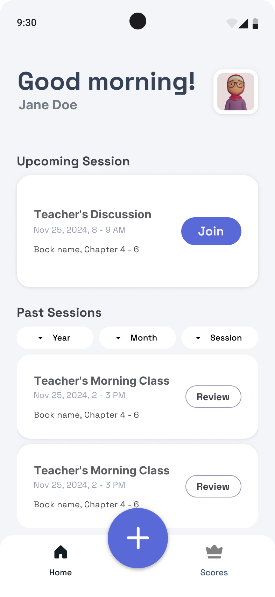
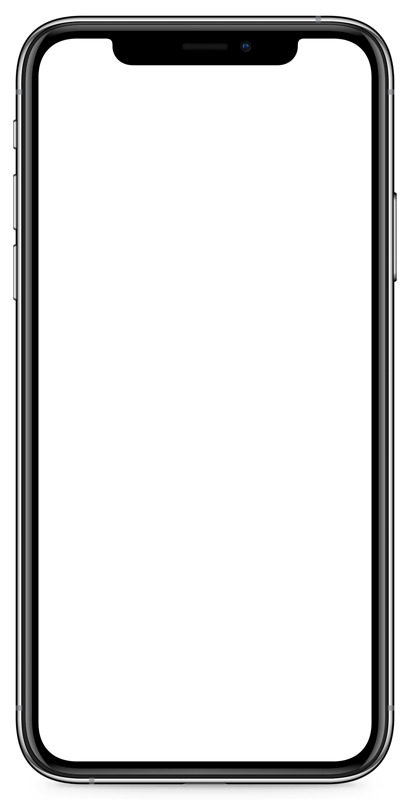
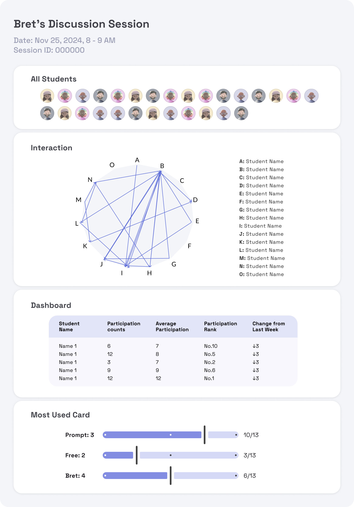
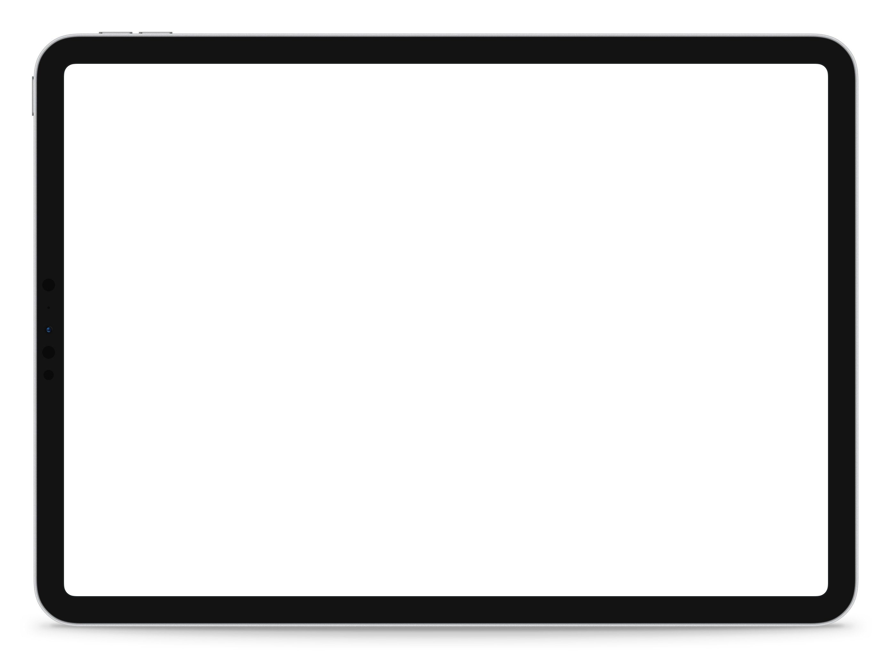
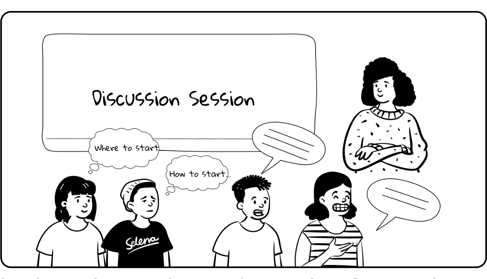

Learning Product Design|K-12|Use in class
ChatterBox
[The final product]
Card
What are some links between this reading and themes you’ve talked about in other classes?
Card
Use this card to speak your mind!




Card
Use me when you talk about the prompts from the instructor that are written on the whiteboard.
[The Problem]
Instructor from the City of Bridges High School approached us to seek ways to improve in-class discussion for their literature class.
[Specifically]
- Students need the tool to balance in-class discussion
- Instructor need to tool to track student performance in discussions
- Instructor need the tool to help keep students on topic for discussion and maintain alignment of discussion with learning goals
[Challenge 1]
Limited usage of technology in class
As the user for this product are high-school students, we avoided overly relying on a device during the class to avoid possible distractions in class.
[Strategy 1 - Playing Cards]
While students and teacher can access their course data post-session, the in-class section of the tool uses only cards with NFC chips embedded. This helps keep students’ focus on the task, while enabling introduction of technology in the classroom.
[Challenge 2]
Balancing Discussions
While some students are reserved and reticent, other students jump to the opportunity to express their opinions. How do we balance students’ participation to make everybody heard?
[Strategy 2 - Gamification and Pacing]
We incorporated gamification by adding points and streak systems to reward active participation. Students can earn points by participating in discussion and selecting a card from their topic that they would like to discuss.
As defined by the rules, all students starts with five cards, and can’t get a new card from the draw pile until they have played all five. We believe this would make students mindful about their participation frequency, pacing themselves better in participation.
[Challenge 3]
Keeping discussion on topic
The instructor has expressed that sometimes the discussion heads to an unexpected direction, and it’s hard to redirect the topic.
[Strategy 3 - Prompted cards]
We categorized the cards to three kinds:
- Prompt card: Prompt cards include prompts that we wrote, that are closely aligned with PA educational standard for literature discussion.
- Free card: Free card gives students the freedom to discuss any related topic as they wanted, adding element of freedom to their discussion.
- Instructor card: Instructor cards point to the questions that the instructor has prepared for the class and written on the whiteboard.
With the prompting of these three types of cards, we believe responses from students can be more aligned to their educational requirements and more on topic.
Learner Experience Map
Step through the ChatterBox experience
Learning Media Design — team project with Mufei He, Della Ouyang, Elizabeth Szeto & Sandy Zhao.

[The Problem]
In class, the teacher notices only a few students are speaking up, while others stay quiet, feeling unsure.
“I would like a tool that helps people who I know have a lot to contribute… but don’t always feel empowered to share their thoughts, because the dominant voices in the room take up so much space.” — Teacher
Playing cards are made with embedded NFC chips, while the box itself is embedded with NFC detector to detect the cards when they have been put into the box.
Stage 01
Pre-Session
Preparing for in-class participation by taking notes and annotating while reading books.
Prep questions for instructor-customized cards.
All cards are embedded with NFC chips, and the NFC reader embedded in the basket tracks used cards.
Group the cards based on types to facilitate card distribution.
Pre-formulated cards designed by learning engineers, aligned with PA state educational standards.
Students pick cards based on their interests.
Stage 02 · During Session
Join
Students pick 5 cards based on preference + system recommendation.
Students scan QR codes to claim cards.
Write out questions on the whiteboard.
Cards are linked with student profiles.
Questions displayed on the whiteboard.
Students log into the system via the app.
Match students with question cards to prepare for tracking students’ progress.
Students use the cards to actively participate in discussions, sharing their ideas and engaging with classmates in meaningful conversation.
Stage 03 · During Session
Use
Students participate, responding to the prompts and questions.
Track participation through visual hint of card.
Pace discussion by stopping card redraw for short periods of time.
Card is discarded into basket after use.
Student’s deck of cards is reduced by 1.
Corresponding participation score added to student dashboard.
NFC sensor detection tracks participation and grants points to recorded student actions.
“And I was thinking about, how do I show them visually how much or how little they’re talking?” — Teacher. Shy students see an opportunity to participate through comparison with classmates; active students stay mindful of their own pace.
After using a card, students drop it into the NFC-reader-embedded basket to earn points toward their profile, where they can track participation progress.
Stage 04 · During Session
Leave
Discard unused cards into the card return box.
Conclude the discussion session on the app once class ends.
Students discard unused cards into the empty basket for card re-use.
System automatically detaches the card–student link after the session.
After class, the teacher reviews the post-session report to get an overview of the discussion and check student participation levels.
Stage 05
Post-Session
View the growth dashboard and become motivated to participate more.
View their most-used cards to reflect on how they approach literature.
Assess student participation levels on the growth board.
Monitor the participation map for participation trends and interaction.
Track card popularity and alignment with educational goals for maximum pedagogical effectiveness.
Display growth dashboard for individual participation performance.
Display participation map and density.
Display card-focused analysis to inform instruction and questioning strategies.
Calculate each student’s gathered points to display on the growth board.
Track order of students’ participation from the order cards were discarded into the basket.
Track the most-used cards.
“Monitor topics to conduct formative assessment and align student skills development with PA state educational requirements.”
[Resolution]
Many students are already accustomed to taking notes and marking down talking points before and during class, making this method non-intrusive.
Creating two questions per session allows the instructor to maintain control over the discussion without adding a substantial burden to their responsibilities.
Designing cards aligned with PA state requirements fosters formative observation assessment and helps COBHS demonstrate student success.
[Card Catalog]
Hover over a card
Hover over a card to access the Educational Standard that this card aligns with.